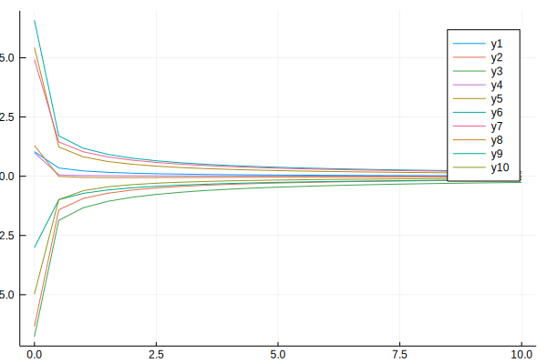
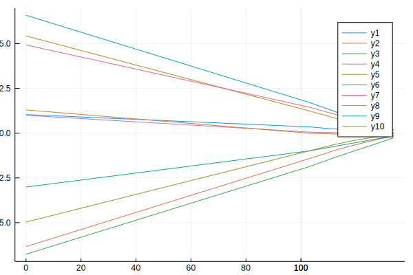

Examples
Contents
Ratio of two means
Consider a setting where independent pairs of random variables $(X_1, Y_1), \ldots, (X_n, Y_n)$ are observed, and suppose that interest is in the ratio of the mean of $Y_i$ to the mean of $X_i$, that is $\theta = \mu_Y / \mu_X$, with $\mu_X = E(X_i)$ and $\mu_Y = E(Y_i) \ne 0$ $(i = 1, \ldots, n)$.
Assuming that sampling is from an infinite population, one way of estimating $\theta$ without any further assumptions about the joint distribution of $(X_i, Y_i)$ is to set the unbiased estimating equation $\sum_{i = 1}^n (Y_i - \theta X_i) = 0$. The resulting $M$-estimator is then $\hat\theta = s_Y/s_X$ where $s_X = \sum_{i = 1}^n X_i$ and $s_Y = \sum_{i = 1}^n Y_i$.
The estimator $\hat\theta$ is generally biased, as can be shown, for example, by an application of the Jensen inequality assuming that $X_i$is independent of $Y_i$, and its bias can be reduced using the empirically adjusted estimating functions approach in Kosmidis & Lunardon (2020).
This example illustrates how MEstimation can be used to calculate the $M$-estimator and its reduced-bias version.
julia> using MEstimation, RandomDefine a data type for ratio estimation problems
julia> struct ratio_data
y::Vector
x::Vector
end;Write a function to compute the number of observations for objects of type ratio_data.
julia> function ratio_nobs(data::ratio_data)
nx = length(data.x)
ny = length(data.y)
if (nx != ny)
error("length of x is not equal to the length of y")
end
nx
end;Generate some data to test things out
julia> Random.seed!(123);
julia> my_data = ratio_data(randn(10), rand(10));
julia> ratio_nobs(my_data)
10The estimating function for the ratio $\theta$ is
$\sum_{i = 1}^n (Y_i - \theta X_i)$
So, the contribution to the estimating function can be implemented as
julia> function ratio_ef(theta::Vector,
data::ratio_data,
i::Int64)
data.y[i] .- theta * data.x[i]
end;The estimating_function_template for the ratio estimation problem can now be set up using ratio_nobs and ratio_ef.
julia> ratio_template = estimating_function_template(ratio_nobs, ratio_ef);We are now ready use ratio_template and my_data to compute the $M$-estimator of $\theta$ by solving the estimating equation $\sum_{i = 1}^n (Y_i - \theta X_i) = 0$. The starting value for the nonlinear solver is set to 0.1.
julia> result_m = fit(ratio_template, my_data, [0.1])
M-estimation with estimating function contributions `ratio_ef`
────────────────────────────────────────────────────────────────────────
Estimate Std. Error z value Pr(>|z|) Lower 95% Upper 95%
────────────────────────────────────────────────────────────────────────
theta[1] 1.07548 0.573615 1.87492 0.0608 -0.0487819 2.19975
────────────────────────────────────────────────────────────────────────
Estimating functions: [-2.051803171809752e-12]
Converged: truefit uses methods from the NLsolve package for solving the estimating equations. Arguments can be passed directly to NLsolve.nlsolve through keyword arguments to the fit method. For example,
julia> result_m = fit(ratio_template, my_data, [0.1], show_trace = true)
Iter f(x) inf-norm Step 2-norm
------ -------------- --------------
0 4.321212e+00 NaN
1 3.878230e+00 1.000000e-01
2 2.992266e+00 2.000000e-01
3 1.220339e+00 4.000000e-01
4 2.051803e-12 2.754829e-01
M-estimation with estimating function contributions `ratio_ef`
────────────────────────────────────────────────────────────────────────
Estimate Std. Error z value Pr(>|z|) Lower 95% Upper 95%
────────────────────────────────────────────────────────────────────────
theta[1] 1.07548 0.573615 1.87492 0.0608 -0.0487819 2.19975
────────────────────────────────────────────────────────────────────────
Estimating functions: [-2.051803171809752e-12]
Converged: trueBias reduction in general $M$-estimation can be achieved by solving the adjusted estimating equation $\sum_{i = 1}^n (Y_i - \theta X_i) + A(\theta, Y, X) = 0$, where $A(\theta)$ are empirical bias-reducing adjustments depending on the first and second derivatives of the estimating function contributions. MEstimation can use ratio_template and automatic differentiation (see, ForwardDiff) to construct $A(\theta, Y, X)$ and, then, solve the bias-reducing adjusted estimating equations. All this is simply done by
julia> result_br = fit(ratio_template, my_data, [0.1], estimation_method = "RBM")
RBM-estimation with estimating function contributions `ratio_ef`
Bias reduction method: implicit_trace
────────────────────────────────────────────────────────────────────────
Estimate Std. Error z value Pr(>|z|) Lower 95% Upper 95%
────────────────────────────────────────────────────────────────────────
theta[1] 1.06754 0.573499 1.86146 0.0627 -0.0564928 2.19158
────────────────────────────────────────────────────────────────────────
Adjusted estimating functions: [-1.3405943022348765e-14]
Converged: truewhere RBM stands for reduced-bias M-estimation.
Kosmidis & Lunardon (2020) show that the reduced-bias estimator of $\theta$ is $\tilde\theta = (s_Y + s_{XY}/s_{X})/(s_X + s_{XX}/s_{X})$. The code chunks below tests that this is indeed the result MEstimation returns.
julia> sx = sum(my_data.x);
julia> sxx = sum(my_data.x .* my_data.x);
julia> sy = sum(my_data.y);
julia> sxy = sum(my_data.x .* my_data.y);
julia> isapprox(sy/sx, result_m.theta[1])
true
julia> isapprox((sy + sxy/sx)/(sx + sxx/sx), result_br.theta[1])
trueLogistic regression
Using objective_function_template
Here, we use MEstimation's objective_function_template to estimate a logistic regression model using maximum likelihood and maximum penalized likelihood, with the empirical bias-reducing penalty in Kosmidis & Lunardon (2020).
julia> using MEstimation
julia> using Random
julia> using Distributions
julia> using OptimA data type for logistic regression models (consisting of a response vector y, a model matrix x, and a vector of weights m) is
julia> struct logistic_data
y::Vector
x::Array{Float64}
m::Vector
endA function to compute the number of observations from logistic_data objects is
julia> function logistic_nobs(data::logistic_data)
nx = size(data.x)[1]
ny = length(data.y)
nm = length(data.m)
if (nx != ny)
error("number of rows in of x is not equal to the length of y")
elseif (nx != nm)
error("number of rows in of x is not equal to the length of m")
elseif (ny != nm)
error("length of y is not equal to the length of m")
end
nx
end
logistic_nobs (generic function with 1 method)The logistic regression log-likelihood contribution at a parameter theta for the $i$th observations of data data is
julia> function logistic_loglik(theta::Vector,
data::logistic_data,
i::Int64)
eta = sum(data.x[i, :] .* theta)
mu = exp.(eta)./(1 .+ exp.(eta))
data.y[i] .* log.(mu) + (data.m[i] - data.y[i]) .* log.(1 .- mu)
end
logistic_loglik (generic function with 1 method)Let's simulate some logistic regression data with $10$ covariates
julia> Random.seed!(123);
julia> n = 100;
julia> m = 1;
julia> p = 10
10
julia> x = Array{Float64}(undef, n, p);
julia> x[:, 1] .= 1.0;
julia> for j in 2:p
x[:, j] .= rand(n);
end
julia> true_betas = randn(p) * sqrt(p);
julia> y = rand.(Binomial.(m, cdf.(Logistic(), x * true_betas)));
julia> my_data = logistic_data(y, x, fill(m, n));and set up an objective_function_template for logistic regression
julia> logistic_template = objective_function_template(logistic_nobs, logistic_loglik)
objective_function_template(Main.ex-2.logistic_nobs, Main.ex-2.logistic_loglik)The maximum likelihood estimates starting at true_betas are
julia> o1_ml = fit(logistic_template, my_data, true_betas, optim_method = NelderMead())
M-estimation with objective contributions `logistic_loglik`
──────────────────────────────────────────────────────────────────────────
Estimate Std. Error z value Pr(>|z|) Lower 95% Upper 95%
──────────────────────────────────────────────────────────────────────────
theta[1] 1.03786 2.46744 0.42062 0.6740 -3.79824 5.87395
theta[2] -6.33539 1.53213 -4.13502 <1e-4 -9.33832 -3.33247
theta[3] -6.76459 1.63753 -4.13096 <1e-4 -9.9741 -3.55508
theta[4] 0.994292 1.1077 0.89762 0.3694 -1.17676 3.16534
theta[5] 5.4302 1.6185 3.35508 0.0008 2.25799 8.6024
theta[6] 6.58354 1.92567 3.41884 0.0006 2.8093 10.3578
theta[7] 4.92474 1.39467 3.53111 0.0004 2.19123 7.65824
theta[8] 1.29824 1.25277 1.0363 0.3001 -1.15714 3.75362
theta[9] -3.00981 1.43218 -2.10156 0.0356 -5.81682 -0.202796
theta[10] -4.96494 1.85256 -2.68005 0.0074 -8.59589 -1.334
──────────────────────────────────────────────────────────────────────────
Objective: -31.9044
Takeuchi information criterion: 83.6381
Akaike information criterion: 83.8088
Converged: truefit uses methods from the Optim package internally. Here, we used the Optim.NelderMead method. Alternative optimization methods and options can be supplied directly through the keyword arguments optim_method and optim_options, respectively. For example,
julia> o2_ml = fit(logistic_template, my_data, true_betas, optim_method = LBFGS(), optim_options = Optim.Options(g_abstol = 1e-05))
M-estimation with objective contributions `logistic_loglik`
───────────────────────────────────────────────────────────────────────────
Estimate Std. Error z value Pr(>|z|) Lower 95% Upper 95%
───────────────────────────────────────────────────────────────────────────
theta[1] 1.03787 2.46744 0.420628 0.6740 -3.79822 5.87397
theta[2] -6.33546 1.53214 -4.13505 <1e-4 -9.3384 -3.33253
theta[3] -6.76458 1.63752 -4.13098 <1e-4 -9.97407 -3.55509
theta[4] 0.994237 1.1077 0.897571 0.3694 -1.17681 3.16528
theta[5] 5.43023 1.61849 3.35512 0.0008 2.25805 8.60241
theta[6] 6.58354 1.92566 3.41885 0.0006 2.80932 10.3578
theta[7] 4.9247 1.39466 3.53111 0.0004 2.19122 7.65818
theta[8] 1.29827 1.25278 1.03632 0.3001 -1.15712 3.75367
theta[9] -3.00978 1.43216 -2.10156 0.0356 -5.81676 -0.202795
theta[10] -4.96494 1.85254 -2.68006 0.0074 -8.59585 -1.33402
───────────────────────────────────────────────────────────────────────────
Objective: -31.9044
Takeuchi information criterion: 83.6381
Akaike information criterion: 83.8088
Converged: trueThe reduced-bias estimates starting at the maximum likelihood ones are
julia> o1_br = fit(logistic_template, my_data, coef(o1_ml), estimation_method = "RBM")
RBM-estimation with objective contributions `logistic_loglik`
Bias reduction method: implicit_trace
───────────────────────────────────────────────────────────────────────────
Estimate Std. Error z value Pr(>|z|) Lower 95% Upper 95%
───────────────────────────────────────────────────────────────────────────
theta[1] 0.928169 2.20201 0.42151 0.6734 -3.38769 5.24402
theta[2] -5.4578 1.20924 -4.51341 <1e-5 -7.82787 -3.08773
theta[3] -5.81835 1.26797 -4.58872 <1e-5 -8.30352 -3.33318
theta[4] 0.81906 0.980035 0.835746 0.4033 -1.10177 2.73989
theta[5] 4.64568 1.30015 3.5732 0.0004 2.09744 7.19393
theta[6] 5.66444 1.54657 3.66258 0.0002 2.63321 8.69566
theta[7] 4.16222 1.11835 3.72174 0.0002 1.97028 6.35415
theta[8] 1.14271 1.13618 1.00575 0.3145 -1.08416 3.36957
theta[9] -2.58574 1.2083 -2.13999 0.0324 -4.95396 -0.217525
theta[10] -4.22949 1.49518 -2.82876 0.0047 -7.15999 -1.299
───────────────────────────────────────────────────────────────────────────
Penalized objetive: -36.5538
Takeuchi information criterion: 81.9311
Akaike information criterion: 84.284
Converged: trueUsing estimating_function_template
The same results as above can be returned using an estimating_function_template for logistic regression.
The contribution to the derivatives of the log-likelihood for logistic regression is
julia> function logistic_ef(theta::Vector,
data::logistic_data,
i::Int64)
eta = sum(data.x[i, :] .* theta)
mu = exp.(eta)./(1 .+ exp.(eta))
data.x[i, :] * (data.y[i] - data.m[i] * mu)
end
logistic_ef (generic function with 1 method)Then, solving the bias-reducing adjusted estimating equations
julia> logistic_template_ef = estimating_function_template(logistic_nobs, logistic_ef);
julia> e1_br = fit(logistic_template_ef, my_data, true_betas, estimation_method = "RBM")
RBM-estimation with estimating function contributions `logistic_ef`
Bias reduction method: implicit_trace
───────────────────────────────────────────────────────────────────────────
Estimate Std. Error z value Pr(>|z|) Lower 95% Upper 95%
───────────────────────────────────────────────────────────────────────────
theta[1] 0.928169 2.20201 0.42151 0.6734 -3.38769 5.24402
theta[2] -5.4578 1.20924 -4.51341 <1e-5 -7.82787 -3.08773
theta[3] -5.81835 1.26797 -4.58872 <1e-5 -8.30352 -3.33318
theta[4] 0.81906 0.980035 0.835746 0.4033 -1.10177 2.73989
theta[5] 4.64568 1.30015 3.5732 0.0004 2.09744 7.19393
theta[6] 5.66444 1.54657 3.66258 0.0002 2.63321 8.69566
theta[7] 4.16222 1.11835 3.72174 0.0002 1.97028 6.35415
theta[8] 1.14271 1.13618 1.00575 0.3145 -1.08416 3.36957
theta[9] -2.58574 1.2083 -2.13999 0.0324 -4.95396 -0.217525
theta[10] -4.22949 1.49518 -2.82876 0.0047 -7.15999 -1.299
───────────────────────────────────────────────────────────────────────────
Adjusted estimating functions: [-5.174194406265542e-12, -7.715619809722796e-12, -7.701256299341708e-12, -1.129478455208499e-12, -2.931599407673957e-12, -2.5313223739331647e-12, 5.52573264922529e-12, -1.086478129685986e-12, -5.202852038088679e-12, -4.371947248671404e-12]
Converged: truereturns the reduced-bias estimates from maximum penalized likelihood:
julia> isapprox(coef(o1_br), coef(e1_br))
trueBias-reduction methods
MEstimation currently implements 2 alternative bias reduction methods, called implicit_trace and explicit_trace. implicit_trace will adjust the estimating functions or penalize the objectives, as we have seen earlier. explicit_trace, on the other hand, will form an estimate of the bias of the $M$-estimator and subtract that from the $M$-estimates. The default method is implicit_trace.
For example, for logistic regression via estimating functions
julia> e2_br = fit(logistic_template_ef, my_data, true_betas, estimation_method = "RBM", br_method = "explicit_trace")
RBM-estimation with estimating function contributions `logistic_ef`
Bias reduction method: explicit_trace
───────────────────────────────────────────────────────────────────────────
Estimate Std. Error z value Pr(>|z|) Lower 95% Upper 95%
───────────────────────────────────────────────────────────────────────────
theta[1] 0.895301 2.10014 0.426305 0.6699 -3.2209 5.0115
theta[2] -5.11645 1.11115 -4.60463 <1e-5 -7.29427 -2.93863
theta[3] -5.46494 1.15431 -4.73437 <1e-5 -7.72736 -3.20253
theta[4] 0.74801 0.936884 0.798402 0.4246 -1.08825 2.58427
theta[5] 4.34256 1.20242 3.6115 0.0003 1.98585 6.69926
theta[6] 5.29117 1.42302 3.71828 0.0002 2.50211 8.08023
theta[7] 3.87517 1.0339 3.74812 0.0002 1.84877 5.90158
theta[8] 1.07407 1.09374 0.98202 0.3261 -1.06962 3.21776
theta[9] -2.42976 1.13518 -2.14042 0.0323 -4.65466 -0.204855
theta[10] -3.93176 1.37586 -2.85768 0.0043 -6.62839 -1.23512
───────────────────────────────────────────────────────────────────────────
Adjusted estimating functions: [0.04705609374707262, -0.0064249302319434876, -0.03901183608447706, 0.01075860044658633, 0.0644619641090736, 0.10170034856149987, 0.07052426640831691, -0.01925324826958494, -0.02383295657436299, -0.03494242367189243]
Converged: truewhich gives slightly different estimates that what are in the implict_trace fit in e1_br.
The same can be done using objective functions, but numerical differentiation (using the FiniteDiff package) is used to approximate the gradient of the bias-reducing penalty (i.e. $A(\theta)$).
julia> o2_br = fit(logistic_template, my_data, true_betas, estimation_method = "RBM", br_method = "explicit_trace")
RBM-estimation with objective contributions `logistic_loglik`
Bias reduction method: explicit_trace
───────────────────────────────────────────────────────────────────────────
Estimate Std. Error z value Pr(>|z|) Lower 95% Upper 95%
───────────────────────────────────────────────────────────────────────────
theta[1] 0.895301 2.10014 0.426305 0.6699 -3.2209 5.0115
theta[2] -5.11645 1.11115 -4.60463 <1e-5 -7.29427 -2.93863
theta[3] -5.46494 1.15431 -4.73437 <1e-5 -7.72736 -3.20253
theta[4] 0.74801 0.936884 0.798402 0.4246 -1.08825 2.58427
theta[5] 4.34256 1.20242 3.6115 0.0003 1.98585 6.69926
theta[6] 5.29117 1.42302 3.71828 0.0002 2.50211 8.08023
theta[7] 3.87517 1.0339 3.74812 0.0002 1.84877 5.90158
theta[8] 1.07407 1.09374 0.98202 0.3261 -1.06962 3.21776
theta[9] -2.42976 1.13518 -2.14042 0.0323 -4.65466 -0.204855
theta[10] -3.93176 1.37586 -2.85768 0.0043 -6.62839 -1.23512
───────────────────────────────────────────────────────────────────────────
Penalized objetive: -36.607
Takeuchi information criterion: 81.6646
Akaike information criterion: 84.7635
Converged: true
julia> isapprox(coef(e2_br), coef(o2_br))
trueRegularization
MEstimation allows to pass arbitrary regularizers to either the objective or the estimating functions. Below we illustrate that functionality for carrying out ridge logistic regression, and maximum penalized likelihood, with a Jeffreys-prior penalty.
Ridge logistic regression
The logistic_template that we defined earlier can be used for doing L2-regularized logistic regression (aka ridge logistic regression); we only need to define a function that implements the L2 regularizer
julia> l2_penalty = (theta, data, λ) -> - λ * sum(theta.^2);Then, the coefficient path can be computed as
julia> lambda = collect(0:0.5:10);
julia> deviance = similar(lambda);
julia> coefficients = Matrix{Float64}(undef, length(lambda), length(true_betas));
julia> coefficients[1, :] = coef(o1_ml);
julia> for j in 2:length(lambda)
current_fit = fit(logistic_template, my_data, coefficients[j - 1, :],
regularizer = (theta, data) -> l2_penalty(theta, data, lambda[j]))
deviance[j] = 2 * current_fit.results.minimum
coefficients[j, :] = coef(current_fit)
endThe coefficients versus $\lambda$, and the deviance values are then
julia> using Plots
julia> plot(lambda, coefficients);
julia> savefig("coef_path1.svg");
/home/travis/.julia/packages/GR/yMV3y/src/../deps/gr/bin/gksqt: error while loading shared libraries: libQt5Widgets.so.5: cannot open shared object file: No such file or directory
connect: Connection refused
GKS: can't connect to GKS socket application
GKS: Open failed in routine OPEN_WS
GKS: GKS not in proper state. GKS must be either in the state WSOP or WSAC in routine ACTIVATE_WS
julia> plot(deviance, coefficients);
julia> savefig("coef_path2.svg");
/home/travis/.julia/packages/GR/yMV3y/src/../deps/gr/bin/gksqt: error while loading shared libraries: libQt5Widgets.so.5: cannot open shared object file: No such file or directory
connect: Connection refused
GKS: can't connect to GKS socket application
GKS: Open failed in routine OPEN_WS
GKS: GKS not in proper state. GKS must be either in the state WSOP or WSAC in routine ACTIVATE_WS
Another way to get the above is to define a new data type that has a filed for $\lambda$ and then pass
julia> l2_penalty = (theta, data) -> - data.λ * sum(theta.^2)
#5 (generic function with 1 method)to the regularizer argument when calling fit. Such a new data type, though, would require to redefine logistic_loglik, logistic_nobs and logistic_template.
Jeffreys-prior penalty for bias reduction
Firth (1993) showed that an alternative bias-reducing penalty for the logistic regression likelihood is the Jeffreys prior,. which can readily implemented and passed to fit through the regularizer interface that MEstimation provides. The logarithm of the Jeffreys prior for logistic regression is
julia> using LinearAlgebra
julia> function log_jeffreys_prior(theta, data)
x = data.x
probs = cdf.(Logistic(), x * theta)
log(det((x .* (data.m .* probs .* (1 .- probs)))' * x)) / 2
end
log_jeffreys_prior (generic function with 1 method)Then, the reduced-bias estimates of Firth (1993) are
julia> o_jeffreys = fit(logistic_template, my_data, true_betas, regularizer = log_jeffreys_prior)
M-estimation with objective contributions `logistic_loglik` and user-supplied regularizer
───────────────────────────────────────────────────────────────────────────
Estimate Std. Error z value Pr(>|z|) Lower 95% Upper 95%
───────────────────────────────────────────────────────────────────────────
theta[1] 0.902757 2.12848 0.424131 0.6715 -3.26899 5.07451
theta[2] -5.12117 1.12598 -4.54821 <1e-5 -7.32804 -2.9143
theta[3] -5.50697 1.17399 -4.6908 <1e-5 -7.80795 -3.20598
theta[4] 0.731759 0.943289 0.775753 0.4379 -1.11705 2.58057
theta[5] 4.40532 1.22655 3.59162 0.0003 2.00132 6.80932
theta[6] 5.35741 1.45244 3.68856 0.0002 2.51069 8.20414
theta[7] 4.01716 1.05586 3.80464 0.0001 1.94772 6.0866
theta[8] 0.968304 1.09226 0.886514 0.3753 -1.17249 3.1091
theta[9] -2.45574 1.15748 -2.12163 0.0339 -4.72435 -0.187126
theta[10] -4.00791 1.41216 -2.83815 0.0045 -6.77569 -1.24013
───────────────────────────────────────────────────────────────────────────
Objective: -32.3185
Takeuchi information criterion: 81.7497
Akaike information criterion: 84.6369
Converged: falseNote here, that the regularizer is only used to get estimates. Then all model quantities are computed at those estimates, but based only on logistic_loglik (i.e. without adding the regularizer to it). Kosmidis & Firth (2020) provide a more specific procedure for computing the reduced-bias estimates from the penalization of the logistic regression likelihood by Jeffreys prior, which uses repeated maximum likelihood fits on adjusted binomial data. Kosmidis & Firth (2020) also show that, for logistic regression, the reduced-bias estimates from are always finite and shrink to zero relative to the maximum likelihood estimator.
Regularization is also available when fitting an estimating_function_template. For example, the gradient of the log_jeffreys_prior above is
julia> using ForwardDiff
julia> log_jeffreys_prior_grad = (theta, data) -> ForwardDiff.gradient(pars -> log_jeffreys_prior(pars, data), theta)
#7 (generic function with 1 method)Then the same fit as o_jeffreys can be obtained using estimating functions
julia> e_jeffreys = fit(logistic_template_ef, my_data, true_betas, regularizer = log_jeffreys_prior_grad)
M-estimation with estimating function contributions `logistic_ef` and user-supplied regularizer
───────────────────────────────────────────────────────────────────────────
Estimate Std. Error z value Pr(>|z|) Lower 95% Upper 95%
───────────────────────────────────────────────────────────────────────────
theta[1] 0.902757 2.12848 0.424132 0.6715 -3.26899 5.07451
theta[2] -5.12117 1.12598 -4.54821 <1e-5 -7.32804 -2.9143
theta[3] -5.50697 1.17399 -4.6908 <1e-5 -7.80795 -3.20598
theta[4] 0.731759 0.943289 0.775753 0.4379 -1.11705 2.58057
theta[5] 4.40532 1.22655 3.59162 0.0003 2.00132 6.80932
theta[6] 5.35741 1.45244 3.68856 0.0002 2.51069 8.20414
theta[7] 4.01716 1.05586 3.80464 0.0001 1.94772 6.0866
theta[8] 0.968304 1.09226 0.886514 0.3753 -1.17249 3.1091
theta[9] -2.45574 1.15748 -2.12163 0.0339 -4.72435 -0.187126
theta[10] -4.00791 1.41216 -2.83815 0.0045 -6.77569 -1.24013
───────────────────────────────────────────────────────────────────────────
Estimating functions: [-0.05654234767743366, -0.15711133343677602, -0.2224983623352868, -0.0496152937772255, 0.053589253173147666, 0.141776025954009, 0.0496589906960232, -0.06659143373502979, -0.18441489214860096, -0.0968042975258635]
Converged: trueNote here that the value of the estimating functions shown in the output is that of the gradient of the log-likelihood, i.e.
julia> logistic_loglik_grad = estimating_function(coef(e_jeffreys), my_data, logistic_template_ef)
10-element Array{Float64,1}:
-0.05654234767743366
-0.15711133343677602
-0.2224983623352868
-0.0496152937772255
0.053589253173147666
0.141776025954009
0.0496589906960232
-0.06659143373502979
-0.18441489214860096
-0.0968042975258635instead of the regularized estimating functions, which, as expected, are very close to zero at the estimates
julia> logistic_loglik_grad .+ log_jeffreys_prior_grad(coef(e_jeffreys), my_data)
10-element Array{Float64,1}:
-3.3664765419771925e-11
-6.854786183119188e-11
-7.54295514937553e-11
3.2645414149712337e-12
-1.716715658517387e-11
-1.0427353425157548e-11
6.718571532449147e-11
-3.034239526300553e-12
-5.1641968479287925e-11
-3.874026099914829e-11